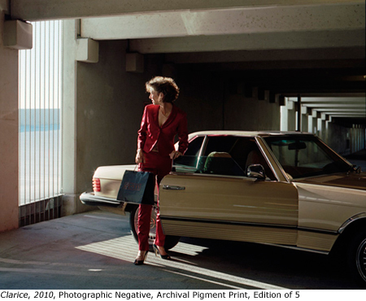

past exhibition | ||
Caitlin Teal PricePresented by Capricious March 15 - May 5 Opening reception for the artist: Tuesday, March 15, 6-8pm Gallery Hours: |
 In Annabelle, Annabelle women stand transfixed in severe everyday landscapes, connected to the world by the objects surrounding them. Each frame is carefully constructed but what lies just beyond is uncertain, perhaps threatening and ultimately left for wonder. These women, with strength and wisdom in the depth of their age, stand boldly and carefully alone, and offer us the opportunity to create stories about life and death, power and vulnerability, magnificence and uncertainty. Caitlin Teal Price was born in 1980 in Chicago, IL, and grew up in Washington, DC. She received her BFA in photography from the Parsons School of Design in 2002, and her MFA from the Yale School of Art in 2009. In 2010, she was awarded the Kodak film grant from Too Much Chocolate and an honorable mention from the New York Photo Awards. She has exhibited her work nation wide and is in the collection of the Robert V. Fullerton Art Museum in San Bernardino, CA. Her work has been published in The New Yorker, Vice, The Believer, Nylon, Details, Vogue, Famous and Capricious magazines. This is the first showing of her most recent project Annabelle, Annabelle and her first solo show in New York City. Caitlin currently lives and works in Washington, DC. Capricious Presents is a roving curatorial project and an extension of the former Capricious Space. It is also the newest offshoot of Capricious Magazine and Publishing. Founded by artist Sophie Mörner in 2004, Capricious is dedicated to showcasing emerging fine art photography. Its contributors and subject matter span the globe. And while constant change is a primary Capricious trait, there are definite common visual threads running throughout its history. Capricious has an affinity for things like animals, androgyny, opposition, reclaimed life, lust, natural as well as urban life, intimacy, revolution and nostalgia. Hanna Liden, Ryan McGinley, Esther Teichmann, Nick Haymes, Olaf Breuning, Melanie Bonajo and Skye Parrott are just a few of the dozens of photographers whose early work has been promoted by Capricious. As a group of projects and publications, Capricious occupies a rare and whimsical space between commercial and fashion photography; it operates as both a tool for discovering new talent and as an artists' oasis. | |
exhibition archive |
|||
| 2016 | 2015 | 2014 | 2013 |
| 2011 | 2010 | 2009 | 2008 |